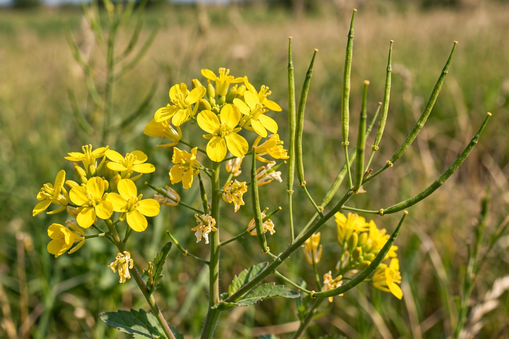

| Family | Brassicaceae |
|---|---|
| Principal species | Brassica nigra, Brassica juncea, Sinapis alba |
| Uses | Condiment seed, leaf vegetable, oilseed, green manure |
The mustard plant is any one of several plant species in the genera Brassica, Rhamphospermum and Sinapis in the family Brassicaceae (the mustard family). Mustard seed is used as a spice. Grinding and mixing the seeds with water, vinegar, or other liquids creates the yellow condiment known as prepared mustard. The seeds can also be pressed to make mustard oil, and the edible leaves are eaten as mustard greens in many cuisines.
Mustard seeds have been used since antiquity. The earliest known cultivation comes from the Indus Valley Civilization, and mustard was used in ancient Greece and Rome both as a condiment and a medicine. Roman cooks mixed ground mustard seed with unfermented grape juice (must), from which the name mustard derives, via Latin mustum ardens — "burning must".
Whole mustard seeds are a staple of Indian cooking, where they are tempered in hot oil until they pop. Ground seed forms the basis of mustards such as Dijon, English mustard, and American ballpark mustard. Mustard greens feature in Chinese, Korean, Japanese, and Southern United States cooking. The pungency comes from glucosinolates, which enzymes convert to sharp-tasting isothiocyanates when the seed is crushed and wetted.
Mustards are fast-growing cool-season annuals. Canada, Nepal, Russia, and Ukraine are among the leading producers of mustard seed. The plants are also widely used as cover crops, suppressing soil-borne pests through biofumigation.
From Wikipedia, the free encyclopedia. Recreated article.